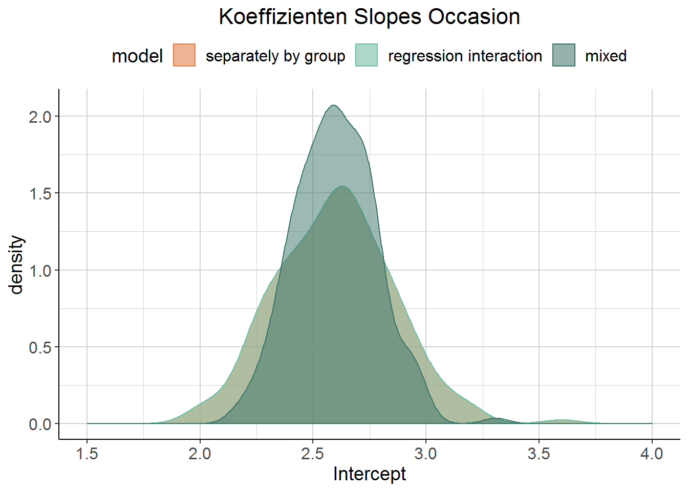

5 Random slope models
Diesmal kann auch der Effekt der Kovariate von Cluster zu Cluster variieren. Zurück zum Beispiel mit den GPA-Scores von Studenten zu verschiedenen Zeitpunkten (Occasions). Diesmal variiert der Effekt der Occasion von Student zu Student - zusätzlich zum Intercept.
Vergleiche vorheriges Modell:
old_model <- lmer(gpa ~ occasion + (1|student), data = gpa)| effect | group | term | estimate | std.error | statistic |
|---|---|---|---|---|---|
| fixed | NA | (Intercept) | 2.60 | 0.02 | 119.80 |
| fixed | NA | occasion | 0.11 | 0.00 | 26.10 |
| ran_pars | student | sd__(Intercept) | 0.25 | NA | NA |
| ran_pars | Residual | sd__Observation | 0.24 | NA | NA |
Jetzt mit random Slope von Occasion für jeden Studenten:
gpa_mixed <- lmer(gpa ~ occasion + (1 + occasion|student), data = gpa)| effect | group | term | estimate | std.error | statistic |
|---|---|---|---|---|---|
| fixed | NA | (Intercept) | 2.60 | 0.02 | 141.59 |
| fixed | NA | occasion | 0.11 | 0.01 | 18.07 |
| ran_pars | student | sd__(Intercept) | 0.21 | NA | NA |
| ran_pars | student | sd__occasion | 0.07 | NA | NA |
| ran_pars | student | cor__(Intercept).occasion | -0.10 | NA | NA |
| ran_pars | Residual | sd__Observation | 0.21 | NA | NA |
Das hier wäre übrigens dasselbe, aber der Typ sagt: “Technically the intercept is assumed but you should keep it for clarity.”
gpa_mixed <- lmer(gpa ~ occasion + (occasion|student), data = gpa)Intercept und fixed Effect haben wieder genau denselben Wert wie im Modell mit random Intercept bzw. im Modell ohne random Effects. Aber: Die Unsicherheit (Residual Standard Deviation) hat sich weiter verringert und auch die Modelpassung ist besser. Auch der random Effect aufs Intercept hat ein wenig abgenommen (einen Teil der Varianz können wir ja jetzt mit random Slopes erklären).
Clark schreibt, dass der random Slope für die Occasion verhältismäßig klein aussieht, aber man sich klar machen muss: Der fixed Effekt von Occasion bedeutet eine Zunahme von .11 GPA-Punkten von Zeitpunkt zu Zeitpunkt. Und die Standardabweichung - also das estimate in der Tabelle - beträgt .067. Was bedeutet, dass die Mehrheit aller Studenten (95 % liegen innerhalb von \(\substack{+\\-} 2SD\)) bei einem Zuwachs zwischen etwa 0 und fast doppelt so vielen GPA-Punkten wie der angenommene fixed Effekt liegt. Was wiederum ziemlich krass ist.
Dann gibt es noch die Korrelation zwischen Intercept und dem random Slope der Occasion. Die Korrelation ist hier mit -0.1 ziemlich vernachlässligbar, aber sie würde bedeuten, dass Studenten mit einem niedrigen Ausgangs-GPA sich über die Zeit hinweg stärker verbessern.
5.1 Mixed Models vs. einzelne Regressionen
Mixed Models und Regressionen pro Cluster oder über die gesamte Stichprobe hinweg unterscheiden sich hinsichtlich der Informationen, die sie berücksichtigen. Das standard Regressionsmodell ignoriert Cluster völlig, poolt also alle Daten (Complete pooling). Gar kein pooling hat man bei der Herangehensweise mit den einzelnen Regressionen pro Student bzw. einer Regression mit Interaktionsterm; die overall Effekte bleiben unberücksichtigt. Was bei mixed Models passiert ist partial pooling, weil die Unterschiede zwischen den Clustern berücksichtigt werden, aber auch die Ähnlichkeit zwischen den Clustern geschätzt wird. Dabei informieren die gepoolten Daten über alle Observations hinweg die Schätzung der Cluster.
5.1.1 Regularisierende Effekte
Der Vergleich mit einer einzelnen Regression pro Student liegt nahe. Dieser Code führt separate Regressionen pro Student durch. Aus der Beschreibung von lmList, scheinbar eine ziemlich lustige Funktion: “Fit a list of lm or glm objects with a common model for different subgroups of the data.”
gpa_lm_by_group <- lmList(gpa ~ occasion | student, gpa)Dabei ist die Regression pro Gruppe genau dasselbe wie eine lineare Regression mit Interaktionsterm. Ein bisschen hässlich in den Densityplots, aber die Regression mit Interaktion und die pro Gruppe überlappen exakt.
lm_regr <- lm(gpa ~ occasion*student, data = gpa)

Auch in den zusätzlichen Plots basierend auf Simulationen, die Clark bastelt, wird die Hauptmessage deutlich:
Mixed Models regularisieren, d.h.: - Intercepts und Slopes von mixed Models und tummeln sich stärker um den overall Effect. - Im Vergleich zu einer Regression pro Cluster/mit Interaktion besteht weniger Unsicherheit über Intercept und Slope. - Mixed Models verhindern Overfitting. Das würde nämlich passieren, wenn man nur den Effekt innerhalb der Cluster betrachtet, ohne den overall Effect zu berücksichtigen.
Je stärker der Effekt der Subgruppen, desto größer die Unsicherheit über den overall Effect.
Mixed Models regularisieren weniger (liegen also weiter weg vom overall Effect und drücken mehr Unsicherheit aus), wenn … - … es mehr Information pro Cluster gibt. - mehr Beobachtungen pro Cluster - mehr Varianz in den random Effects (d.h. den Effekten pro Cluster)
Mixed Models wirken auch dann regularisierend, wenn die Daten unbalanciert sind. Das Beispiel war hier: Mehr Messzeitpunkte pro Student, aber es gibt Dropout über die Zeit hinweg. Die Datenmenge ist also etwa dieselbe, aber zu späteren Messzeitpunkten sind weniger Daten vorhanden als zu früheren. Auch hier liegt das mixed Model näher am overall Effect als die Regression pro Gruppe/mit Interaktion.
5.1.2 Predictions
Spannend wird es, wenn man die Vorhersagen der beiden Herangehensweisen (mixed model vs. einzelne Regressionen) visualisiert:

Jetzt der Vergleich der Predictions der jeweiligen Modelle. Farblich kodiert werden Predictions aufwärts vs. abwärts. Gehighlighted sind im Folgenden immer dieselben sechs Studenten; drei, die im mixed Model einen Aufwärtstrend zeigen und drei, die im mixed Model einen Abwärtstrend zeigen (das sind dort eh nur drei). In Dunkelgrün die overall Regressionslinie.

Im Vergleich dazu die Predictions der Regression pro Student und der Regression mit Interaktion Occasion \(\times\) Student: Beides ist exakt dasselbe.
Ich möchte Clarks Summary hier zitieren: “At this point it might be clearer why some would call these richly parameterized linear models. Relative to a standard regression we get extra variance parameters that add to our understanding of the sources of uncertainty in the model, we can get the subjects specific effects, and their correlation, and use that information to obtain far better predictions. What’s not to like?”
\(\to\) Siehe Skript uebungen.R – Übung #4 für random Intercepts und random Slopes angewendet auf die Sleep-Daten.
5.2 Simulationen
Der Code für die Random-Intercept-Simulationen wird angepasst, um random Slopes in einer “simplified version” zu simulieren.
rand_slope_sim <- function(Ngroups = 100, NperGroup = 3, sdRandIntercept = .5,
sdRandSlope = .25, sdError = .25, sdFixedEffect = .5,
AvIntercept = 2){
N <- Ngroups * NperGroup
groups <- factor(rep(1:Ngroups, each = NperGroup))
rand_int <- rnorm(Ngroups, sd = sdRandIntercept)
rand_slope <- rnorm(Ngroups, sd = sdRandSlope)
e <- rnorm(N, sd = sdError)
x <- rnorm(N)
y <- (AvIntercept + rand_int[groups]) + (sdFixedEffect + rand_slope[groups]) * x + e
return(data.frame(x = x, y = y, groups = groups))
}5.2.1 Intercept und Slopes unkorreliert
“This next bit of code shows a way to run a mixed model while specifying that there is no correlation between intercepts and slopes. There is generally no reason to do this unless the study design warrants it, but you could do it as a step in the model-building process, such that you fit a model with no correlation, then one with it.”
set.seed(2806)
slope_sim1 <- rand_slope_sim()
model_ints_only <- lmer(y ~ x + (1|groups), data = slope_sim1)
model_with_slopes <- lmer(y ~ x + (1|groups) + (0 + x|groups), data = slope_sim1)
model_with_slopes_cor <- lmer(y ~ x + (1 + x|groups), data = slope_sim1)| estimate | Standard Error | estimate | Standard Error | estimate | Standard Error | |
|---|---|---|---|---|---|---|
| (Intercept) | 1.96 | 0.05 | 1.97 | 0.05 | 1.96 | 0.05 |
| fixed effet x | 0.50 | 0.03 | 0.49 | 0.04 | 0.49 | 0.04 |
| SD Intercept group | 0.49 | NA | 0.48 | NA | 0.48 | NA |
| SD Slope group | NA | NA | 0.29 | NA | 0.28 | NA |
| Intercept x Slope | NA | NA | NA | NA | -0.06 | NA |
| SD residual | 0.36 | NA | 0.25 | NA | 0.25 | NA |
Die Rownames für die Konfidenzintervalle sind wieder sehr kryptisch benannt: .sig01, .sig02, .sig03, .sigma, (Intercept) und x. Wobei .sig02 vom Modell mit vs. ohne Korrelation nicht dasselbe ist. Meine Beschriftung sollte hoffentlich passen.
| 2.5 % | 97.5% | 2.5 % | 97.5% | 2.5 % | 97.5% | |
|---|---|---|---|---|---|---|
| SD Intercept group | 0.41 | 0.57 | 0.41 | 0.56 | 0.41 | 0.56 |
| SD Slope group | NA | NA | 0.22 | 0.36 | 0.22 | 0.35 |
| Intercept x group | NA | NA | NA | NA | -0.33 | 0.21 |
| SD residual | 0.33 | 0.40 | 0.22 | 0.29 | 0.22 | 0.29 |
| (Intercept) | 1.86 | 2.07 | 1.86 | 2.07 | 1.86 | 2.07 |
| fixed effect x | 0.45 | 0.54 | 0.42 | 0.56 | 0.42 | 0.56 |
Es scheint mit der zusätzlichen Korrelation etwas weniger Unsicherheit über den Effekt des Slopes pro Gruppe zu geben, aber das ist wohl vernachlässigbar. Interessant ist, wie viel Unsicherheit über die Korrelation zwischen Intercept und Slope besteht.
Compare model fit using the AIC function, e.g. AIC(model). The model with the lower AIC is the better model, so which would you choose?
| sigma | logLik | AIC | BIC | REMLcrit | df.residual |
|---|---|---|---|---|---|
| 0.36 | -218.85 | 445.71 | 460.52 | 437.71 | 296.00 |
| sigma | logLik | AIC | BIC | REMLcrit | df.residual |
|---|---|---|---|---|---|
| 0.25 | -194.79 | 399.57 | 418.09 | 389.57 | 295.00 |
| sigma | logLik | AIC | BIC | REMLcrit | df.residual |
|---|---|---|---|---|---|
| 0.25 | -194.68 | 401.37 | 423.59 | 389.37 | 294.00 |
Das Modell mit Slopes eine geringere residual Standard Deviation und passt besser hinsichtlich z.B. AIC oder BIC. Mit Korrelation ändert sich nicht so bedeutend viel, nur der Fit wird ein klein wenig besser.
5.2.2 Stärkerer Slope
TO DO Was passiert, wenn man die Slopes stärker variieren lässt?